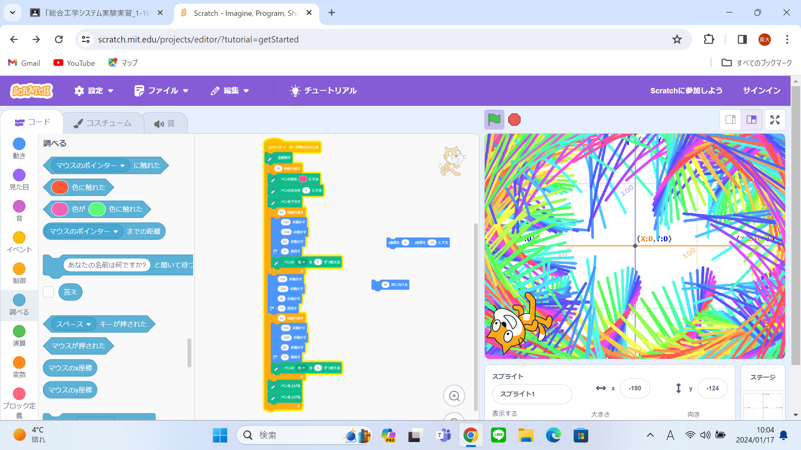
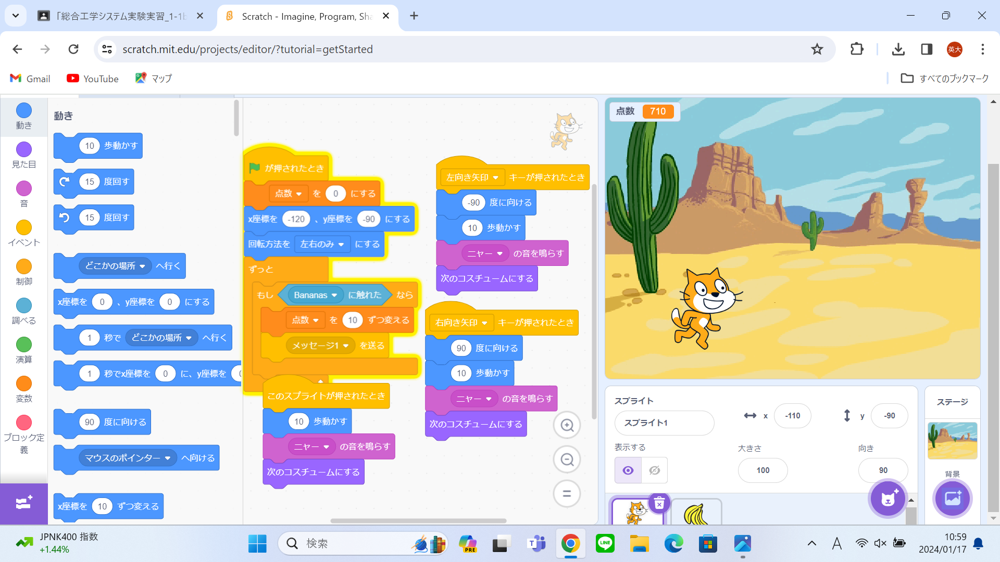

1週目のレポート ： 公大高専１年実習I-1
1b班22番 エイトスペック
第1週目
1-1 サイエンスアート

1.内容
スクラッチで猫を動かして絵をかいた。スペースを押されたら全部消されて， ペンの色をピンクからスタートするようにしてそのあとジグザグ周りの方を動くようにした．
2.感想
スクラッチは中学生のときに少ししたことがあったが，その時はあまり楽しいと思わなかったので，集中してなかった。 しかし，今回の授業は真面目にして楽しかったので中学生のときも真面目にしたらよかったとおもった．
1-2 ゲーム

1.内容
バナナが落ちてきてそれをキャラクターが地面につくまでにキャッチするゲームをつくった．
2.感想
最初は難しいのかなと思っていたが思っていたよりはできた．しかし何回か間違えていてキャラクターが動かないなどのミスがあった． ミスをしたときにどこを間違えたのかを探すのが大変だった．
1-3 ホームページ作成
私のホームページ
1.内容
実習で行った内容などをホームページを作成するところを開いて編集のボタンを押して内容などを書いていく．
2.感想
ホームページはもっと簡単に作れるのかと思っていたが内容を書いているところの周りにいろんな単語が書いていてこれをすべて自分ひとりで書こうとしたら 大変そうだなと思った．